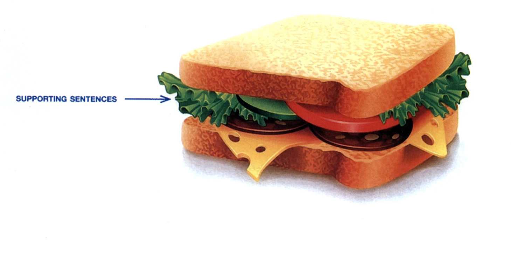
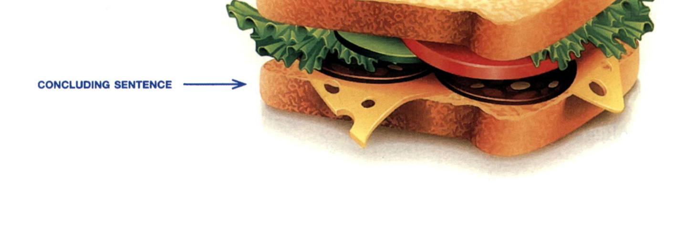

Supporting sentences follow the topic sentence in a paragraph. Supporting sentences explain or prove the ideas in the topic sentence. They are the "filling" in a paragraph "sandwich." The supporting sentences are the biggest part of a paragraph, just as the filling is the biggest part of a sandwich.

Work alone or with a partner. Add supporting points for the topic sentences in Group 1 from Practice 3 on page 41. Write your points in the spaces provided. You may write phrases or sentences.
To show readers that they are moving from one supporting idea to another, good writers use words or phrases known as transition signals. A transition signal alerts the reader that the writer is moving on to the next supporting idea. It also shows how the new supporting idea is related to the previous idea.
In a listing-order paragraph, you can use transition signals such as First, Second, and Third to show the reader the order of the main points.
Here are some transition signals that show listing order:
| Listing-Order Transition Signals | |
|---|---|
| First, First of all, Second, Third, In addition, Also, Finally, |
. . . also . . . . . . , also. |
Most listing-order transition signals come at the beginning of the sentence, followed by a comma.
First, living in a foreign country helps you learn another language faster than studying it at school.
In addition, small colleges are friendlier, so new students make friends more quickly.
Also, studying is a popular library activity.
The transition signal also is an exception. You can use it at the beginning of a sentence with a comma (as in the example above), but you can also use it with a verb (without a comma) or at the end of a sentence (preceded by a comma).
Studying is also a popular library activity.
Students also like to study in the library.
Studying is a popular library activity, also.
Read the paragraph. It contains six mistakes with listing-order transition signals. Find and correct each mistake.
Good Study Habits
Successful students share several good study habits. FirstFirst, they review their class notes every day. AlsoAlso, they read the assigned chapters before class, not after. SecondSecond, they form study groups to prepare for exams. In Addition,In addition, they ask their teachers questions when they don't understand something. They also, budgetalso budget time carefully so that they never fall behind. In shortIn short, good students plan ahead and stay organized.
A Find the listing-order transition signals in the writing model on page 38. Then fill in the blanks.
B Complete the paragraph with listing-order transition signals. Add commas where needed. For some, there may be more than one answer.
Kinds of Intelligence1
There are many kinds of intelligence. First,1. there is mathematical-logical intelligence. People with this kind of intelligence become mathematicians, scientists, and engineers. Second,2. there is linguistic2 intelligence. People with linguistic intelligence are good at language, so many become musicians and writers. We are familiar with these first two kinds of intelligence, but other kinds are not so familiar. There are also3. spatial intelligence and musical intelligence. Spatial intelligence is necessary for architects and artists, and musical intelligence is necessary for musicians. In addition,4. there is kinesthetic3 intelligence. Athletes and performers have kinesthetic intelligence. Personal intelligence is a kind of intelligence, also5.. People with personal intelligence manage people well, so they become leaders of society. In short, there is more than one way to be smart.
1 This paragraph is based on the work of Howard Gardner, a professor at the Harvard Graduate School of Education.
2 linguistic: related to language
3 kinesthetic: related to movement of the human body
Unity is an important characteristic of a well-written paragraph. When a paragraph has unity, all the sentences in it are about one main idea. Another way of saying this is that all the supporting sentences must be relevant, which means "directly related to the main idea." For example, if your paragraph is about your mother's good cooking, a sentence such as My sister is also a good cook is irrelevant (that is, not relevant) because the paragraph is about your mother, not your sister. When you write a paragraph, make sure that all of your supporting sentences are relevant.
Work alone or with a partner. Each paragraph contains two irrelevant sentences. Circle the topic and underline the controlling idea in each topic sentence. Then draw a line through each irrelevant sentence.
Boston
Boston is one of the most popular U.S. cities with college students. There are two main reasons for this. First, students enjoy being in a city that is full of other college students. The Boston area has over 50 colleges and universities, including Boston University, Massachusetts Institute of Technology, and Harvard University. The Charles River, between Boston and Cambridge, is famous for boating and races. Because of the large number of college students, there are many events and activities in the city every day. Second, Boston has the feel of a big city, but it's really rather small. It is quite convenient for students to get around using public transportation. It is very easy for students to become familiar with the city and feel comfortable. There are many friendly neighborhoods near the colleges, and students usually feel welcomed. However, some Boston residents complain about noisy or irresponsible college students. It's no surprise that people regard Boston as one of the top U.S. college towns.
Nurses
Good nurses should have at least five characteristics. First, they must be caring. They must show genuine concern for sick, injured, or frightened people. Second, nurses must be extremely organized. If a nurse forgets to give a patient his or her medicine on time, the consequences could be serious. Third, nurses must be quite calm. They may have to make a life-and-death decision in an emergency, and it's clear that calm people make better decisions than anxious people. Doctors also need to stay calm in emergencies. In addition, nurses should be physically strong because nursing requires a lot of hard physical work. Finally, they must be intelligent enough to learn difficult subjects such as chemistry and psychology and to operate the complex equipment used in hospitals today. There is a shortage of nurses today, so they earn good salaries. In brief, nursing is a profession for people who are caring, organized, calm, strong, and intelligent.
Home-Cooked Meals
Eating home-cooked meals offers several benefits. First, home-cooked meals are usually healthier because you control the ingredients, so you can avoid excess salt, sugar, and oil. Second, cooking at home is generally cheaper than eating at restaurants, since you buy ingredients in bulk and avoid paying for service. Many popular restaurants require reservations weeks in advance. Third, preparing meals at home allows families to spend time together, since cooking and eating can become a shared daily activity. My uncle owns a small restaurant near the train station. In addition, home cooking lets you try new recipes and flavors from different cultures at your own pace. Some kitchen knives are more expensive than others. In short, home-cooked meals are healthier, more affordable, and bring families closer together.
Paragraphs that stand alone (that is, paragraphs that are not part of a longer composition) often end with a concluding sentence. A concluding sentence signals the close of the paragraph to the reader.

Here are several points to keep in mind about concluding sentences:
In short, there are several types of college degrees in the United States.
(see page 46, Paragraph 1)
It's no surprise that people regard Boston as one of the top U.S. college towns.
(see page 51, Paragraph 1)
To summarize, employers look for dependable, responsible team players.
(see page 45, Paragraph 4)
In brief, nursing is a profession for people who are caring, organized, calm, strong, and intelligent.
(see page 52, Paragraph 2)
| Conclusion Signals | ||
|---|---|---|
| To conclude, In conclusion, |
To sum up, To summarize, In summary, |
In brief, In short, Indeed, |
Never introduce a new idea in your concluding sentence. Instead, review or repeat the ideas you have already discussed.
DO THIS: In short, good flight attendants are friendly, self-confident, and strong.
DO NOT DO THIS: Also, good flight attendants love to travel.
OR
In conclusion, I hope to become a good flight attendant some day.
Read the paragraphs. Circle the letter of the best concluding sentence for each one, and write it on the line.
There are two reasons I love big cities. First of all, big cities are alive 24 hours a day. You can go shopping, see a movie, exercise at a gym, get something to eat, or go roller skating at any time of the day or night. Second, in big cities you are free to do whatever you like. No one watches your daily comings and goings. You can stay out all night or stay home all day, and no one will judge you. To sum up, I love big cities because you can be independent.
a. To sum up, I love big cities because you can be independent.
b. In short, big cities attract me because there are so many things to do.
c. In brief, I like big cities because of their energy and freedom.
There are two reasons I hate big cities. First of all, big cities are noisy 24 hours a day. You can hear horns honking, traffic roaring, music blaring, and people talking at all hours. It is never quiet in a big city. Second, there is no feeling of community in big cities. No one knows or cares about you. Neighbors who have lived next door to each other for many years don't even know each others' names. That can make life extremely lonely. In brief, big cities are noisy, lonely places to live.
a. In brief, big cities are noisy, lonely places to live.
b. In conclusion, I prefer to live in a small town, where it is quieter and people are friendlier.
c. Also, big cities have a lot of crime.
A Read the paragraphs. Write a concluding sentence for each one.
Successful young fashion designers usually have three characteristics. First of all, they must be very creative. They must use their artistic abilities and their knowledge of textiles and colors. Second, they must be willing to work hard over a long period of time. Usually, young fashion designers start out as poorly paid assistants or as unpaid interns. They must work many long hours for little or no pay to learn the needed skills. Finally, successful young fashion designers must be well-organized and understand the importance of building an outstanding portfolio. A portfolio is a large folder with sketches, photos, and samples of a designer's work. It is visual proof of a designer's talent, vision, and accomplishments. In summary, successful young fashion designers are creative, hard-working, and have excellent portfolios.
I find that being a computer salesperson is a very rewarding job. First, my job allows me to meet many different types of people. I like this because I'm an outgoing person, and I enjoy talking with people and finding out about them. Second, my job requires me to problem-solve and find creative ways to meet my customers' needs. I find it satisfying to figure out which of my company's products are best for my clients. Third, the job requires me to learn about new developments in my field. I find this part of the job satisfying because I like staying informed, and I love the challenge of learning new things. In conclusion, I like being a salesperson because I enjoy working with people, solving problems, and learning new things.
B In Practice 6 on page 48, you wrote supporting ideas for five topic sentences. Now, write a concluding sentence for each topic. Use a different conclusion signal for each.
In the Prewriting section of this chapter (pages 35–36), you saw how clustering helps you get ideas about a topic. Once you have your ideas, you can use another prewriting technique known as outlining to help you organize them.
Here is the outline created from the edited cluster about good flight attendants on page 36:
To create the outline, the writer took the three main characteristics that he identified in his cluster and wrote them down in the order that he wanted to write about them. He labeled these A, B, and C. To complete the outline, he added a topic sentence and a concluding sentence.
When you make an outline, try to make the main points (A, B, C, and so on) grammatically the same—all adjectives, all nouns, all verb phrases, or all sentences.
Use your cluster in Practice 1 on page 37 to complete the outline. Find three main points and fill in the A, B, and C blanks. Then add a title, a topic sentence, and the concluding sentence.
On a separate sheet of paper, write a paragraph using the outline you created in Practice 11. Use the writing model on page 38 as a guide. Follow these directions: